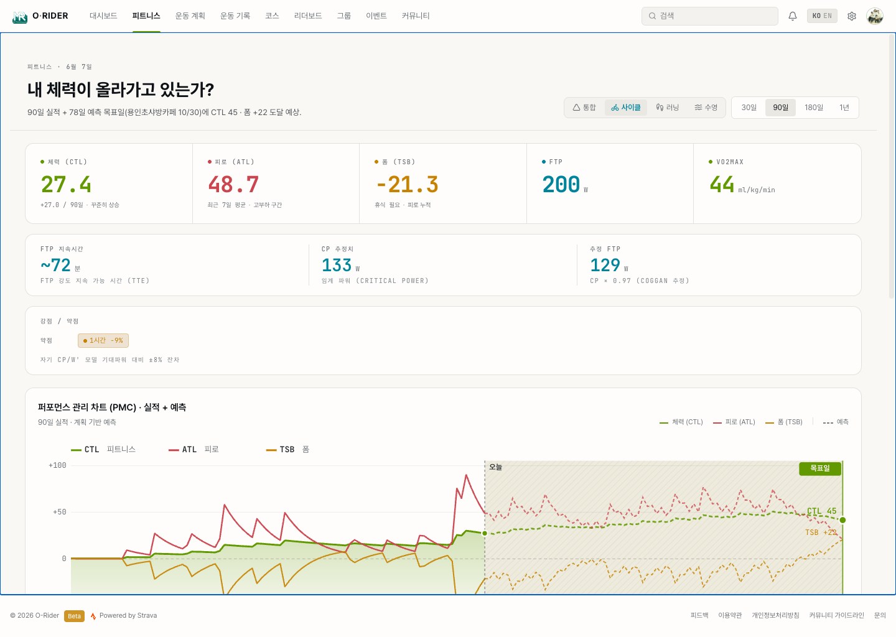

6. 고급 데이터 활용
이 섹션의 목적
장기적인 체력 변화를 추적하고, 파워 데이터를 기반으로 훈련 전략을 수립하는 것. 이 섹션은 몇 달 이상의 데이터가 쌓였고, "더 빨라지고 싶다" 또는 "체계적으로 훈련하고 싶다"는 목표가 있는 라이더를 위한 것입니다.
고급 분석은 피트니스 메뉴에서 확인합니다. 파워미터 데이터가 있으면 더 정밀한 분석이 가능합니다.

6.1 피트니스 점수 — "내 체력이 올라가고 있는가"
확인할 것
피트니스 페이지의 퍼포먼스 관리 차트(PMC)에서 장기간의 체력 변화 추이를 봅니다. 상단 KPI에는 체력(CTL) · 피로(ATL) · 폼(TSB) 세 지표가 함께 표시됩니다.
세 지표는 모두 TSS(Training Stress Score) 누적에서 계산됩니다. 체력(CTL)은 최근 42일 평균 훈련 부하, 피로(ATL)는 최근 7일 평균 훈련 스트레스, 폼(TSB)은 체력 − 피로(음수면 피로, 양수면 회복)를 의미합니다.
해석 기준
체력(CTL)은 TSS의 누적 효과를 나타냅니다.
| 패턴 | 의미 | 대응 전략 |
|---|---|---|
| 꾸준히 상승 | 체력이 쌓이고 있음 | 현재 훈련량 유지, 회복에 주의 |
| 정체 | 같은 자극에 적응됨 | 훈련 강도나 볼륨 변화 필요 |
| 급격한 상승 | 과훈련 위험 | 회복 주간 삽입, 피로 모니터링 |
| 하락 | 훈련 중단 또는 회복 기간 | 의도한 디로드면 정상, 그 외에는 원인 파악 |
기간별 활용
| 기간 | 목적 |
|---|---|
| 30일 | 최근 훈련 부하 파악 — "이번 달 충분히 훈련했는가" |
| 90일 | 시즌 체력 변화 — "시즌 초반 대비 얼마나 올랐는가" |
| 180일 | 반기 추이 — "올봄 대비 가을 체력이 어떤가" |
| 1년 | 연간 주기 전체 — "작년 같은 시기와 비교" |
결과
"지금 체력이 올라가는 중인지, 정체인지, 쉬어야 하는지"를 객관적으로 판단하여 훈련 계획을 조정합니다.
6.2 활동 부하 차트 — "일별 훈련 강도 관리"
확인할 것
일별 TSS를 막대 차트로 표시합니다. 매일의 훈련 부하를 시각적으로 확인합니다.
해석 기준
| 일별 TSS | 의미 |
|---|---|
| 50 이하 | 가벼운 회복 라이딩 |
| 50~150 | 일반적인 훈련 라이딩 |
| 150~300 | 높은 부하 — 다음 날 가벼운 라이딩이나 휴식 권장 |
| 300 이상 | 매우 높은 부하 — 장거리 대회급, 충분한 회복 필요 |
활용 전략
- 고강도 → 저강도 교대 — 높은 TSS 다음 날은 가벼운 라이딩으로 회복
- 주간 TSS 합계 — 전주 대비 10% 이상 급증하면 과훈련 위험
- 연속 휴식일 — 2일 이상 연속 휴식이 반복되면 훈련 루틴 재점검
결과
훈련과 회복의 균형을 데이터로 관리하여 부상 없이 꾸준히 체력을 쌓습니다.
6.3 파워 커브 — "나는 어떤 유형의 라이더인가"
확인할 것
파워미터 데이터가 있는 활동을 기반으로 파워 커브를 생성합니다. X축은 시간(5초~60분), Y축은 최대 출력(W)입니다.
해석 기준
| 구간 | 측정하는 것 | 높으면 |
|---|---|---|
| 5초 피크 | 스프린트 폭발력 | 스프린터형 — 결승 스프린트, 언덕 돌파에 유리 |
| 1분 피크 | 무산소 능력 | 짧은 오르막, 급가속에 강함 |
| 5분 피크 | VO2max (최대산소섭취량) | 중거리 오르막에 강함 |
| 20분 피크 | FTP의 기준 (관례상 ×0.95) | 지속 가능한 출력 — 장거리 강도의 기준 |
| 60분 피크 | 지구력 | 장시간 고출력 유지 — 타임트라이얼형 |
FTP(기능적 역치 출력)는 이론상 1시간 유지 가능한 최대 파워입니다. 20분 피크 × 0.95로 추정합니다. FTP가 높을수록 같은 속도에서 여유가 더 생깁니다.
파워 커브 진행 차트
시간이 지남에 따라 각 구간의 피크가 어떻게 변했는지 비교합니다.
- 커브가 전체적으로 올라갔으면 — 전반적인 체력 향상
- 특정 구간만 올라갔으면 — 해당 능력(스프린트/지구력 등) 향상
- 장기간 변화 없으면 — 새로운 자극이 필요한 시점
결과
자신의 강점과 약점을 객관적으로 파악하여, 부족한 영역을 집중 훈련할 수 있습니다.
6.4 심박 존 분석 — "훈련 강도 분포 확인"
확인할 것
피트니스 페이지에서 심박 존별 시간 분포를 차트로 확인합니다.
해석 기준
| 존 | 이름 | 훈련 목적 |
|---|---|---|
| 존 1 | 회복 | 피로 해소, 액티브 리커버리 |
| 존 2 | 지구력 | 기초 체력 구축 — 장거리 라이딩의 기본 |
| 존 3 | 템포 | 지구력+강도 — "편안하지는 않지만 대화 가능" |
| 존 4 | 역치 | FTP 근처 — 실질적인 체력 향상 구간 |
| 존 5 | VO2max | 최대 강도 — 짧은 인터벌에만 적합 |
활용 전략
- 장거리 라이딩 — 존 2 시간이 70% 이상이면 적절한 강도
- 인터벌 훈련 — 존 4~5 시간이 15~20%면 효과적인 세션
- 존 3만 많은 라이딩 — "약간 힘들지만 효과도 약한" 애매한 강도 — 목적에 맞는 존을 의식적으로 선택
결과
"오늘 라이딩의 강도 배분이 목적에 맞았는가"를 존 분포로 검증합니다.
6.5 데이터 기반 훈련 전략
종합 활용 방법
위의 도구들을 조합하면 다음과 같은 전략적 판단이 가능합니다:
| 질문 | 확인하는 데이터 | 판단 기준 |
|---|---|---|
| "체력이 올라가고 있나?" | 체력(CTL) 추이 | 우상향이면 양호, 정체면 자극 변경 |
| "과훈련은 아닌가?" | 활동 부하 차트 | 주간 TSS가 전주 대비 10% 이상 급증 시 주의 |
| "어떤 능력을 키워야 하나?" | 파워 커브 | 약한 구간(스프린트 or 지구력) 식별 |
| "특정 구간에서 더 빨라지고 있나?" | 세그먼트 리더보드 | 같은 세그먼트의 기록 추이 비교 |
| "적절한 강도로 타고 있나?" | 심박 존 분포 | 목적(회복/지구력/고강도)에 맞는 존 분포인지 |
결과
감이 아닌 데이터에 기반하여 "다음에 무엇을 어떻게 타야 하는지"를 결정합니다. 이것이 웹 플랫폼의 궁극적인 가치입니다.